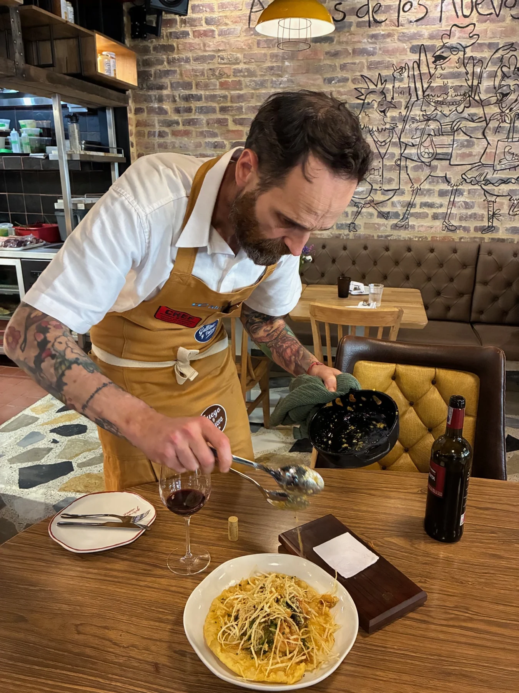
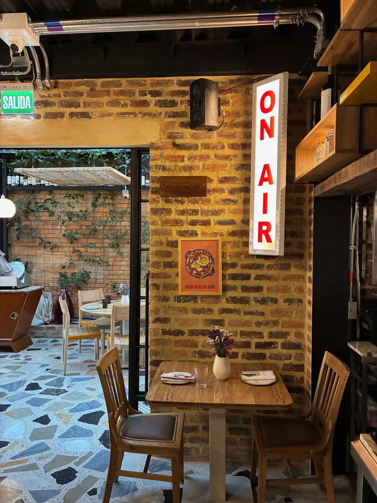
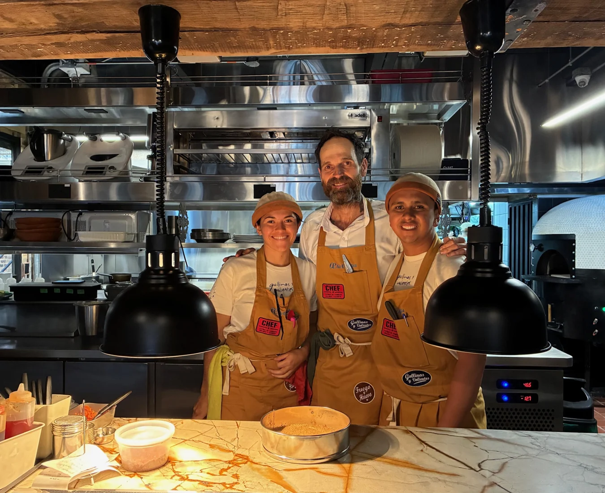

Bogotá Cerca de El Virrey
Gallinas y Valientes
Cocina de acento español cerca del parque El Virrey: tortillas, tapas, arroces y platos de la parrilla y el horno de leña.

Detrás de la mesa
La casa
Mesas de madera, muros de ladrillo y una cocina con acento español. El cocinero vasco Koldo Miranda abrió Gallinas y Valientes en Bogotá en 2026.
El origen de la tortilla vaga
Gallinas y Valientes rinde homenaje a la tortilla vaga de Sacha Hormaechea. En Madrid, Sacha la cuaja por debajo sin voltearla. La foto de apertura registra un acabado en mesa en Bogotá, no una forma de servicio garantizada.


Bogotá
Visita
Cerca del parque El Virrey
Esta es la referencia general de ubicación en Bogotá. La entrada exacta aún no está confirmada.
- Horarios
- Por confirmar con el restaurante.
- Contacto y llegada
- Por confirmar el canal de atención y si se requiere reserva.
Gallinas y Valientes · Bogotá
Reservas
El canal oficial de reservas está por confirmar. Esta demo no recibe solicitudes.